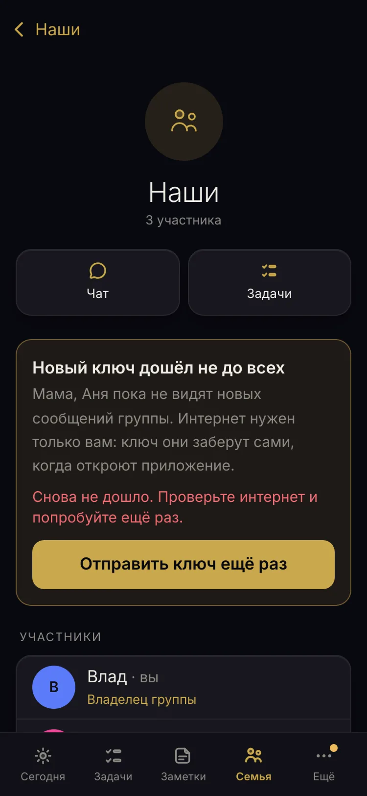
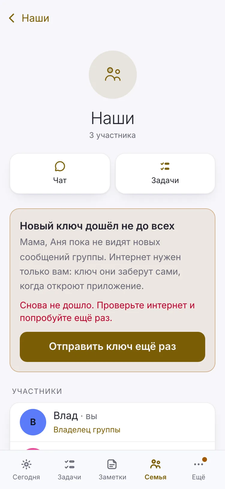
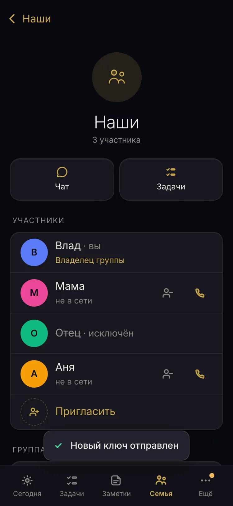
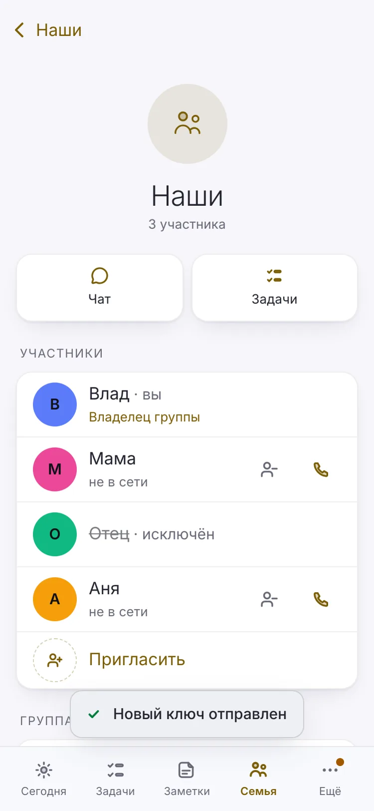

А после нажатия: снова не дошло (слева) · дошло (справа)
Неудача — словами в самой карточке, кнопка остаётся; успех — тост «Новый ключ отправлен», карточка уходит. В Б и В — те же тексты в подписи строки



